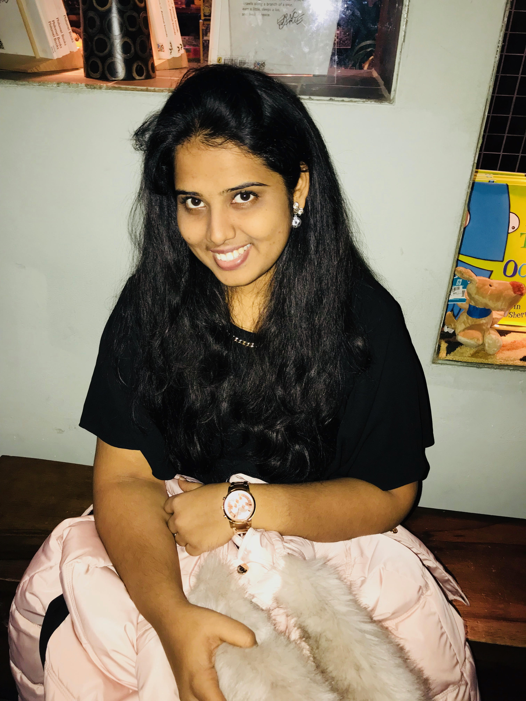

Introduction
I’m newly admitted student of Applied computer science for spring 2018.I am from Vijayawada, India.
I completed my graduation from K L University in Electronics and Computer Science in the year of 2015.
I got placed in Infosys Limited, India during my third year campus placements.
During under graduation, I have done my certification on IBM DB2 Admin.
I was trained in python during my training in Infosys.
Later, I worked on two projects under clients Toyota and Microsoft.
In my 2.5 years of work experience in Infosys, I worked on .Net, Microsoft Azure and SharePoint.
I’ve completed my certification in 70-532(Developing Microsoft Azure Solutions) and a certified Microsoft Specialist
Future Plans and Hobbies
I’m planning to work on big data and cloud technologies.
Apart from technical knowledge, I'm interested in Lettering,Calligraphy,Painting.